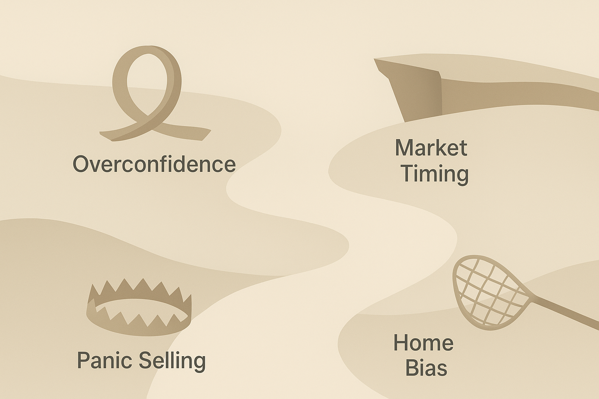
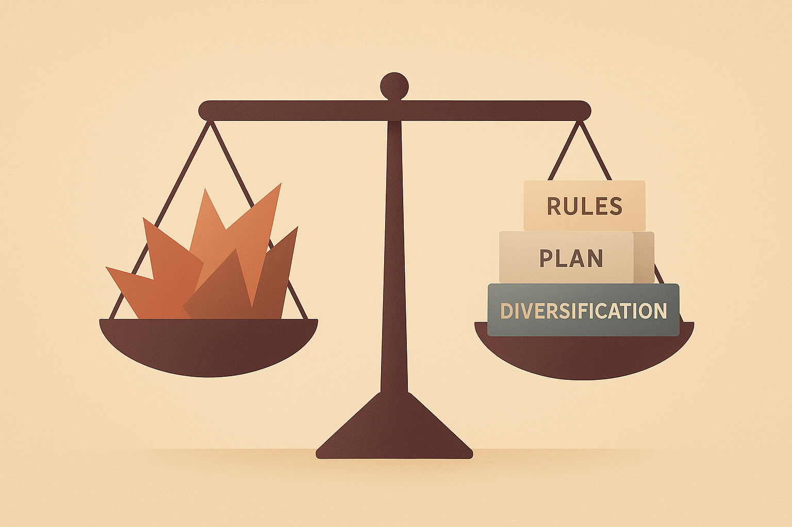

17 Die größten Anlegerfehler – und wie du sie vermeidest

17.1 Warum Anlegerfehler ganz normal sind (und warum sie trotzdem teuer werden können)
Wenn du schon eine Weile investierst – selbst nur mit kleinen Beträgen – wirst du irgendwann merken: Die größte Herausforderung ist nicht die Börse. Nicht die Wirtschaft. Nicht die Nachrichten. Sondern:
👉 dein eigenes Verhalten.Fast jeder Fehler, der Anlegern schadet, hat nichts mit Zahlen zu tun, sondern mit Emotionen. Mit Angst. Mit Gier. Mit Ungeduld. Mit zu viel Selbstvertrauen. Mit zu wenig Geduld. Mit Dingen, die man nicht sieht, wenn man in Jubel oder Panik steckt.
Stell dir vor, du hättest zwei unsichtbare Begleiter:
- der erste flüstert: „Vertrau dir! Du weißt, was du tust!“
- der zweite ruft: „Oh nein! Krise! Verkauf sofort!“
Zwischen diesen beiden Stimmen finden 90 % der schlechten Entscheidungen statt.
Dieses Kapitel soll das ändern. Nicht durch komplizierte Psychologie, sondern durch klare, verständliche Beispiele und Geschichten, die dir zeigen:
- warum wir Fehler machen,
- warum sie menschlich sind,
- und wie du sie zuverlässig vermeiden kannst.
Wenn du am Ende dieses Kapitels angekommen bist, wirst du ein seltenes Werkzeug besitzen:
👉 Du wirst deine eigenen Emotionen beim Investieren verstehen.Und das macht dich besser als 90 % aller Anleger.
17.2 Fehler 1: Overconfidence – zu viel Vertrauen in die eigenen Fähigkeiten
17.2.1 Was Overconfidence bedeutet
Overconfidence bedeutet: Du glaubst, du bist besser als der Durchschnitt – besonders, wenn du es nicht bist.
Das klingt hart, aber es ist ein uralter psychologischer Effekt. Zum Beispiel:
👉 80 % aller Autofahrer glauben, besser zu fahren als der Durchschnitt.
👉 90 % aller Studierenden glauben, überdurchschnittlich intelligent zu sein.
👉 Und über 70 % aller Hobby-Anleger glauben, sie könnten den Markt schlagen.
Die Mathematik sagt: Das ist unmöglich.
Aber wir Menschen lieben Geschichten über besondere Fähigkeiten. Über Gewinner. Über den einen perfekten Deal. Und deshalb überschätzen wir uns besonders schnell dort, wo die Ergebnisse uns erst Jahre später einholen: an der Börse.
17.2.2 Die typische Overconfidence-Geschichte
Stell dir Max vor.
Max hat gerade seine ersten 1.500 € investiert – ein paar Tech-Aktien, etwas Krypto. Er hat keine Strategie, aber er hat Glück: Die Kurse steigen.
Max fühlt sich wie ein Naturtalent. Vielleicht wie einer, der „es einfach kann“.
Er erzählt seinen Freunden davon. Er sucht auf Social Media nach Leuten, die dieselben Aktien feiern. Er kauft mehr. Immer mehr. Und irgendwann hat er völlig vergessen, dass das ein Risiko-Spiel ist.
Dann kommt die Realität: Ein Crash, eine schlechte Nachricht, ein Zinsentscheid – irgendetwas, das Max nicht vorhersehen konnte.
Die Gewinne schmelzen. Plötzlich wird aus Selbstvertrauen Panik.
Das ist Overconfidence in Reinform:
Ein Gefühl, das erst aufbaut, wenn alles gut läuft – und zusammenbricht, wenn du es am wenigsten gebrauchen kannst.
17.2.3 Warum Overconfidence dich Geld kostet
👉 Du setzt zu große Beträge auf einzelne Investments.
👉 Du glaubst, dass du Muster erkennst, die nicht existieren.
👉 Du handelst zu häufig und machst dadurch Verluste durch Gebühren und Timing.
👉 Du ignorierst breite Diversifikation, weil „du es besser weißt“. Das Resultat: Die meisten Anleger, die zu selbstbewusst handeln, verdienen am Ende weniger als diejenigen, die einfach nur einen ETF besparen.
17.2.4 Wie du Overconfidence vermeidest
1. Schreibe deine Investmentregeln auf. Sobald etwas schriftlich fixiert ist, fällt es schwerer, impulsiv dagegen zu handeln.
2. Prüfe Erfolge immer kritisch: War es Können – oder nur Zufall in einem guten Marktumfeld?
3. Mache dein Portfolio langweilig. Je einfacher es ist, desto schwerer wird es, „kreativ“ zu werden.
4. Erinnere dich daran: Profis mit Milliardenbudgets schlagen den Markt kaum. Warum solltest du es mit Smartphone-Apps und Freizeit versuchen?
17.3 Fehler 2: Panikverkäufe – Emotionen steuern die Entscheidungen
17.3.1 Warum Panik so mächtig ist
Es gibt einen psychologischen Bias namens Loss Aversion (Verlustaversion). Er bedeutet:
👉 Verluste tun ungefähr doppelt so stark weh wie Gewinne Freude bereiten.Wenn dein Konto um 500 € fällt, fühlst du Schmerz. Wenn es um 500 € steigt, ist das angenehm – aber nicht genauso intensiv.
Also versuchst du unbewusst alles, um Verluste zu vermeiden. Und das führt zu Panikverkäufen.
17.3.2 Die Story: Der Blick aufs Smartphone
Stell dir Anna vor.
Anna hat 6.000 € in einem Welt-ETF. Sie spart regelmäßig, alles läuft ruhig.
Dann kommt ein Tag wie viele andere in der Finanzgeschichte: Die Kurse fallen plötzlich.
-5 %.
-8 %.
-10 % in zwei Wochen.
Anna schaut ständig auf ihr Smartphone. Ihr Gehirn interpretiert jede rote Zahl als Alarm – wie ein rotes Warnlicht im Cockpit.
Sie liest Nachrichten: „Crash! Rezession! Unsicherheit!“
Die Angst wächst. Es fühlt sich an wie ein Loch im Boden, das größer und größer wird.
Und dann – in einem Moment völliger Überforderung – verkauft sie.
Zwei Wochen später erholt sich der Markt. Aber Anna ist draußen. Sie traut sich nicht zurück. Und aus einem vorübergehenden Minus wird ein dauerhafter Fehler.
17.3.3 Warum Panikverkäufe deine Rendite zerstören
👉 Du verkaufst im Tief.
👉 Du steigst später teurer wieder ein.
👉 Du verpasst die besten Erholungsphasen (die oft nur wenige Tage dauern).
👉 Dein emotionaler Stress bleibt hängen – jeder Crash fühlt sich schlimmer an als der vorherige. Ein panischer Anleger verliert nicht nur Geld, sondern auch Vertrauen – in sich selbst und in die Märkte.
17.3.4 Wie du Panikverkäufe vermeidest
1. Checke dein Portfolio nicht täglich. Je weniger du die Schwankungen siehst, desto weniger Angst hast du.
2. Nutze feste Regeln: Zum Beispiel: „Ich verkaufe niemals wegen kurzfristiger Nachrichten.“
3. Mach dir klar: Jede Krise wurde historisch überstanden. Es gibt nicht eine einzige Ausnahme.
4. Betrachte Rückgänge als Teil des Plans. Minus 20 %? Das ist ein Feature, kein Bug – so funktionieren Märkte nun einmal.
17.4 Fehler 3: Overtrading – zu häufig handeln aus Langeweile, Nervosität oder Gier
17.4.1 Was Overtrading ist
Overtrading bedeutet nicht nur, dass du viel kaufst und verkaufst. Es bedeutet, dass du handelst, ohne dass ein sinnvoller Grund dafür besteht.
Du handelst, weil:
👉 du dich langweilst
👉 du „etwas tun willst“
👉 du Angst hast, etwas zu verpassen
👉 du in sozialen Medien zu viele Tipps siehst
👉 du denkst, du müsstest reagieren
17.4.2 Story: Die App, die ständig blinkt
Leon hat eine moderne Trading-App. Sie schickt ihm Push-Nachrichten:
👉 „Diese Aktie steigt!“
👉 „Neue Empfehlung!“
👉 „Jetzt einsteigen?!“
Leon fühlt sich ständig unter Druck, zu handeln. Er denkt:
„Wenn ich nichts mache, verpasse ich vielleicht die Chance des Jahres!“
Also führt er Transaktion nach Transaktion durch. Am Ende sieht sein Portfolio aus wie ein überfüllter Kühlschrank: Alles mögliche liegt drin, aber nichts passt zusammen.
Er verdient zwischendurch sogar Geld – doch die Gewinne verschwinden durch:
- Gebühren
- schlechte Timing-Entscheidungen
- Stress
- Steuern
- impulsive Moves
Overtrading fühlt sich aktiv an, aber ist passiv katastrophal.
17.4.3 Warum Overtrading gefährlich ist
👉 Du verlierst Geld durch ständige Gebühren.
👉 Du machst Timing-Fehler, die du erst später siehst.
👉 Du investierst chaotisch statt strategisch.
👉 Du baust ein unübersichtliches Portfolio.
👉 Du riskierst Fehlentscheidungen wegen Social-Media-Hypes. Kurz:
Du arbeitest viel, verdienst aber weniger.
17.4.4 Wie du Overtrading vermeidest
1. Erlaube dir nur feste, seltene Handelstage. Viele Profis handeln nur einmal im Monat – oder einmal im Quartal.
2. Deaktiviere Notifications. Push-Nachrichten sind der natürliche Feind der Ruhe.
3. Nutze eine klare Strategie. Wer weiß, was er tut, lässt sich weniger ablenken.
4. Investieren ist kein Spiel. Je weniger du es als Spiel siehst, desto besser wirst du.
17.5 Fehler 4: Falsche Erwartungen – unrealistische Ziele führen zu Frust
17.5.1 Der Ursprung unrealistischer Erwartungen
Unrealistische Erwartungen entstehen oft durch:
👉 Social Media („Ich habe 1.000 € in 50.000 € verwandelt!“)
👉 Marketingversprechen („Schnell reich, ohne Risiko!“)
👉 einzelne Erfolgsgeschichten („Hätte man in Bitcoin 2012…“)
👉 Vergleiche mit anderen Anlegern
Dein Gehirn speichert diese Extrembeispiele – und plötzlich erscheint der Weg zum Reichtum nur noch einen cleveren Deal entfernt.
Das ist gefährlich.
17.5.2 Story: Die perfekte Aktie, die nie kommt
Tom will unbedingt „die eine Aktie finden, die seine Zukunft verändert“. Er sucht ständig nach Geheimtipps. Er liest Artikel über „die nächste Amazon“, „die nächste Nvidia“, „die nächste Tesla“.
Doch diese Erwartungen setzen ihn unter Druck: Jede Aktie, die nicht explodiert, fühlt sich wie ein Fehler an. Und so jagt Tom Luftschlössern hinterher, statt solide Vermögensbildung zu betreiben.
Er ist dauernd enttäuscht. Nicht, weil er schlecht investiert – sondern weil seine Erwartungen so unrealistisch sind, dass jede Realität dagegen verblasst.
17.5.3 Warum falsche Erwartungen gefährlich sind
👉 Du hast ständig das Gefühl, du müsstest mehr erreichen.
👉 Du springst von Strategie zu Strategie.
👉 Du wirst ungeduldig.
👉 Du wechselst Investments, weil sie nicht schnell genug steigen.
👉 Du gibst zu früh auf – obwohl du eigentlich auf dem richtigen Weg bist. So verlieren selbst kluge Anleger unnötig Zeit, Geld und Motivation.
17.5.4 Wie du realistische Erwartungen entwickelst
1. Denke in Jahren, nicht in Wochen. Gute Rendite ist kein Sprint, sondern ein ruhiger Dauerlauf.
2. Verstehe langfristige Durchschnittswerte. Ein Welt-ETF bringt historisch vielleicht 6–8 % pro Jahr – mal mehr, mal weniger.
3. Rechne mit Schwankungen. Minus 20 % ist völlig normal. Minus 40 % kommt manchmal vor. Das ist kein Weltuntergang – sondern Finanzgeschichte.
4. Vergleiche dich nicht. Jedes Portfolio ist anders. Jede Lebenssituation ist anders. Was für andere funktioniert, muss nicht für dich funktionieren.
17.6 Fehler 5: Fehlende Regeln – ohne klaren Plan wird alles schwieriger

17.6.1 Warum Regeln so entscheidend sind
Du brauchst Regeln, weil du ohne Regeln von deinen Emotionen gesteuert wirst.
Regeln:
👉 reduzieren Stress
👉 geben Klarheit
👉 verhindern impulsive Fehlentscheidungen
👉 schützen dich vor dir selbst
👉 machen dein Denken ruhiger
👉 erhöhen deine langfristige Rendite
Ein gut investierender Mensch ist nicht jemand, der „besser analysiert“ – sondern jemand, der bessere Routinen hat.
17.6.2 Story: Zwei Anleger, ein Unterschied
Paul und Lisa starten beide gleichzeitig.
Paul investiert nach Bauchgefühl. „Ich mache es so, wie es sich richtig anfühlt.“
Lisa schreibt vorher Regeln auf:
- Welche ETFs sie kauft
- Wann sie kauft
- Wann sie verkauft (fast nie)
- Wie sie mit Schwankungen umgeht
- Wie oft sie checkt
- Wie sie rebalanced
Zwei Jahre später:
- Paul ist gestresst, springt zwischen Strategien und zweifelt an sich.
- Lisa ist entspannt, handelt selten und weiß genau, warum sie investiert.
Der Unterschied ist kein Talent. Kein Wissen. Kein Glück. Sondern: Regeln.
17.6.3 Wie du gute Regeln entwickelst
1. Schreibe auf, warum du investierst. Das „Warum“ schützt dich in Krisen.
2. Lege feste Abläufe fest. Zum Beispiel:
👉 Monatlicher Sparplan
👉 Einmal jährlich Rebalancing
👉 Keine Verkäufe aus Emotionen
3. Bestimme deine Risikotoleranz. Was kannst du aushalten? Was macht dich nervös?
4. Dokumentiere deine Entscheidungen. Notiere, warum du gekauft oder verkauft hast. Das verhindert impulsive Fehler.
17.7 Fehler 6: Kurzfristiges Denken – Ungeduld frisst deine Rendite
17.7.1 Warum kurzfristiges Denken so verbreitet ist
Wir leben in einer Welt, in der alles schnell geht: Videos dauern 15 Sekunden. Chats sind in Echtzeit. Online-Shopping liefert am selben Tag. Informationen überschlagen sich im Sekundentakt.
Doch die Börse funktioniert komplett anders. Sie ist langsam, unruhig, unvorhersehbar, aber zuverlässig – wenn man ihr Zeit gibt.
Diese zwei Welten passen schlecht zusammen. Und das erzeugt Ungeduld. Sehr viel Ungeduld.
17.7.2 Story: Die Pflanze, die nicht wachsen wollte
Stell dir vor, du pflanzt einen Samen ein. Jeden Tag schaust du nach. Du gräbst die Erde um, kontrollierst die Wurzel, gießt wieder, gräbst erneut.
Du würdest die Pflanze damit zerstören – nicht, weil du böse bist, sondern weil du zu ungeduldig bist.
So wirkt kurzfristiges Denken beim Investieren: Du machst zu viel, zu schnell, zu hektisch – statt einfach wachsen zu lassen.
17.7.3 Warum kurzfristiges Denken deine Performance ruiniert
👉 Du interpretierst normale Schwankungen als Probleme.
👉 Du wechselst zu häufig Strategien.
👉 Du verkaufst zu früh.
👉 Du jagst Trends hinterher, statt langfristig zu planen.
👉 Du setzt dich selbst unter Druck, „Ergebnisse zu sehen“.Dabei ist die wichtigste Wahrheit des Investierens:
Zeit schlägt Timing. Immer.
17.7.4 Wie du dich von kurzfristigem Denken löst
1. Betrachte dein Portfolio wie einen Garten. Regelmäßig pflegen – nicht ständig manipulieren.
2. Setze dir klare Haltezeiträume: z. B. „Ich denke in 10-Jahres-Blöcken.“
3. Erinnere dich daran: Die größten Gewinne entstehen zwischen sehr langweiligen Momenten.
4. Vermeide tägliche News. Sie erzeugen Lärm, keine Erkenntnis.
Kurzfristiges Denken ist menschlich – aber es ist der Feind deiner langfristigen Rendite.
17.8 Fehler 7: Komplexität suchen, wo keine sein muss
17.8.1 Warum komplexe Strategien so verführerisch wirken
Wir Menschen glauben oft: „Wenn etwas kompliziert ist, muss es besser sein.“
Aber das stimmt an der Börse fast nie. Komplexität erzeugt:
👉 Stress
👉 mehr Fehler
👉 mehr Parameter
👉 mehr Interpretationsspielräume
👉 und am Ende oft schlechtere Ergebnisse
Es gibt Anleger, die riesige Excel-Tabellen bauen, 27 Indikatoren prüfen, 14 Einzeltitel analysieren – und dennoch schlechter abschneiden als jemand, der einfach nur einen Welt-ETF hält.
Das ist kein Zufall: Bevor eine Strategie „gut“ ist, muss sie verständlich, robust, langfristig stabil und einfach umsetzbar sein.
17.8.2 Story: Der Algorithmus, der alles konnte – außer funktionieren
Felix ist Informatiker. Er liebt Daten, Algorithmen und Muster. Als er mit dem Investieren beginnt, baut er sich ein System:
👉 10 Kennzahlen
👉 5 Momentum-Indikatoren
👉 3 Risiko-Metriken
👉 verschiedene Zeitfenster
👉 optimierte Einstiegs- und Ausstiegsregeln
Das System sieht perfekt aus. Zumindest rückwirkend.
Doch in der echten Welt funktioniert es nicht. Warum?
Weil die Börse keine Maschine ist. Sie verändert sich ständig. Und komplexe Strategien brechen schneller auseinander als einfache.
Am Ende landet Felix – wie viele vor ihm – bei einem simplen Kernportfolio. Und er gesteht sich ein:
„Ich habe die Komplexität mit Können verwechselt.“
17.8.3 Wie du den Komplexitätsfalle entkommst
1. Halte dein Basisportfolio so simpel wie möglich. Welt-ETF + Sparplan = für die meisten die beste Lösung.
2. Ergänzungen nur in kleinen Beimischungen. Erst stabil, dann kreativ.
3. Komplexe Strategien nicht blind kopieren. Die meisten funktionieren nur rückwirkend gut.
4. Vertraue auf Struktur statt auf Tricks.
Einfachheit ist eines der mächtigsten Werkzeuge, das du hast.
17.9 Fehler 8: Hypes folgen – FOMO und Trendjagd

17.9.1 Warum FOMO so gefährlich ist
FOMO („Fear of Missing Out“) ist eines der stärksten Gefühle im modernen Investieren. Es entsteht, wenn:
👉 alle über dieselbe Aktie sprechen
👉 Social Media voll ist mit „Mach schnell!“
👉 Kurse plötzlich stark steigen
👉 du das Gefühl hast, „zu spät“ zu sein
FOMO macht blind und drückt alle rationalen Gedanken weg.
Es ist der größte Treiber hinter schlechten Käufen in der Geschichte.
17.9.2 Story: Die Rakete, die schon gestartet war
Mira liest überall vom „nächsten großen Ding“: Eine Aktie, die „explodiert“. Influencer posten Raketen-Emojis. Alle feiern Gewinne. Mira fühlt sich, als würde der Zug ohne sie abfahren.
Sie kauft.
Und genau ab diesem Moment… dreht der Trend.
Nicht, weil der Markt sie ärgern will – sondern weil Trends eben nicht ewig laufen. Und die späten Käufer häufig die sind, die die letzten Prozent bezahlen.
Mira verliert Geld. Und sie verliert Vertrauen.
Alles wegen eines Impulses, der wenige Minuten anhielt.
17.9.3 Warum Hypes gefährlich sind
👉 Du kaufst zu spät.
👉 Du verkaufst zu spät.
👉 Du verlierst deine Strategie.
👉 Du machst Entscheidungen, um dazuzugehören – statt sinnvoll zu handeln. Der größte Risikofaktor in Hype-Phasen ist nicht der Markt. Sondern deine Angst, nicht dabei zu sein.
17.9.4 Wie du Hype-Fallen vermeidest
1. Mache keine Investments, die du nicht in drei Sätzen erklären kannst.
2. Warte bewusst 72 Stunden, bevor du einem „heiß diskutierten“ Investment folgst.
3. Prüfe: Würdest du es auch kaufen, wenn niemand darüber redet?
4. Erinnere dich: Die besten Chancen verstecken sich oft in völlig langweiligen Anlagen.
17.10 Fehler 9: Bestätigungsfehler – du suchst nur nach Infos, die deine Meinung stützen
17.10.1 Was der Bestätigungsfehler ist
Confirmation Bias bedeutet:
Du suchst nach Informationen, die deine bestehende Meinung bestätigen – und ignorierst alles, was dagegen spricht.
Das passiert unbewusst. Und es ist beim Investieren besonders gefährlich.
17.10.2 Story: Der Anleger, der nur hören wollte, was er hören wollte
Jonas kauft eine Aktie. Kurz danach schaut er nicht nach objektiven Analysen – er sucht nach Artikeln, Videos und Kommentaren, die sagen:
„Gute Entscheidung!“ „Die Aktie wird steigen!“ „Analyst XY ist bullish!“
Alles, was in die andere Richtung geht, blendet Jonas aus. Er blockt es gedanklich weg.
So sieht er die Realität nicht – sondern nur seine eigene Echokammer.
Und Echokammern kosten Geld.
17.10.3 Warum der Bestätigungsfehler gefährlich ist
👉 Du übersiehst Warnsignale.
👉 Du bleibst zu lange in schlechten Investments.
👉 Du unterschätzt Risiken.
👉 Du denkst, du hättest „Recht“, statt nach Wahrheit zu suchen. Das führt zu mehr Verlusten als jede Kennzahl.
17.10.4 Wie du den Bestätigungsfehler vermeidest
1. Suche aktiv nach Gegenargumenten. Frage: „Warum könnte ich falschliegen?“
2. Lies neutrale Quellen.
3. Stelle dir eine Regel: „Ich vertraue keiner Analyse, die mir zu sehr nach Bestätigung klingt.“
4. Nutze Checklisten statt Meinungen.
Wenn du Fakten statt Gefühle bewertest, wirst du automatisch ein besserer Investor.
17.11 Fehler 10: Kein Rebalancing – das Portfolio driftet unbemerkt ab
17.11.1 Warum Rebalancing so wichtig ist
Rebalancing bedeutet: Du bringst dein Portfolio wieder auf die ursprüngliche Aufteilung zurück.
Beispiel: Du wolltest 80 % Aktien und 20 % Anleihen. Nach einem guten Börsenjahr ist es plötzlich 90/10.
Ohne Rebalancing:
👉 hast du mehr Risiko als gewollt
👉 bist du anfälliger für Rückschläge
👉 verlierst du die Balance
👉 lässt du emotionale Schwankungen zu
Mit Rebalancing:
👉 kontrollierst du dein Risiko
👉 verkaufst du Hochphasen und kaufst Tiefphasen automatisch
👉 hältst du deine Strategie durch
👉 wirst du stabiler
Es ist simpel – aber entscheidend.
17.11.2 Die Story: Zwei Freunde, zwei Wege
Sara und Emil starten gleichzeitig. Beide ein 70/30-Portfolio.
Sara macht ein jährliches Rebalancing. Emil lässt alles laufen.
Nach fünf Jahren:
👉 Saras Portfolio bleibt stabil.
👉 Emils Portfolio ist plötzlich 85/15 – viel riskanter, ohne dass er es gemerkt hat.
In einem Crash verliert Emil deutlich mehr. Nicht, weil er dumm war – sondern weil er nichts getan hat.
Rebalancing ist wie das Zentrieren eines Fahrrads: Du merkst erst, wie wichtig es ist, wenn du es nie machst.
17.11.3 Wie du Rebalancing richtig machst
1. Lege einen festen Zeitpunkt fest: einmal im Jahr – perfekt.
2. Nutze feste Regeln: Wenn eine Assetklasse um mehr als X % vom Ziel abweicht, wird angepasst.
3. Mache es emotionslos. Rebalancing ist eine Routine, kein Urteil.
17.12 Was du aus diesem Kapitel mitnehmen solltest
👉 Die größten Anlegerfehler sind **emotional**, nicht fachlich.
👉 Overconfidence führt zu Übermut – und später zu Panik.
👉 Panikverkäufe zerstören langfristige Rendite.
👉 Overtrading entsteht aus Aktionismus, nicht aus Strategie.
👉 Ungeduld macht solide Entscheidungen kaputt.
👉 Komplexität ist selten besser als Einfachheit.
👉 Hypes verleiten zu späten, schlechten Käufen.
👉 Bestätigungsfehler lässt dich Risiken ignorieren.
👉 Rebalancing ist Pflicht – nicht Kür.
👉 Die beste Strategie ist die, die du **ruhig und über Jahre** durchhalten kannst.Wenn du diese Fehler erkennst, bist du schon jetzt deutlich weiter als die meisten Anleger.
17.13 Zum Nachdenken
👉 Wie reagierst du, wenn dein Portfolio fällt?
👉 Welche deiner Entscheidungen waren emotional statt logisch?
👉 Hast du schon einmal etwas gekauft, weil „alle davon gesprochen haben“?
👉 Wie viele deiner Regeln existieren nur in deinem Kopf – und nicht schriftlich?Ehrlichkeit mit dir selbst zahlt sich hier besonders aus.
17.14 Ausblick
Im nächsten Kapitel wirst du sehen, wie sich all diese Erkenntnisse in einem einzigen, klaren Investment-Plan zusammenfügen.
Ein Plan, der:
👉 dich vor impulsiven Entscheidungen schützt
👉 einfach anzuwenden ist
👉 wissenschaftlich fundiert ist
👉 und langfristig funktioniert
Wenn Kapitel 17 dir gezeigt hat, was du vermeiden solltest, zeigt Kapitel 18 dir, was du tun solltest.
Bist du bereit für den entscheidenden Schritt – hin zu einem Plan, der dein gesamtes Anlegerleben verändern kann?